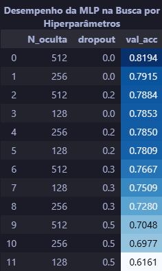
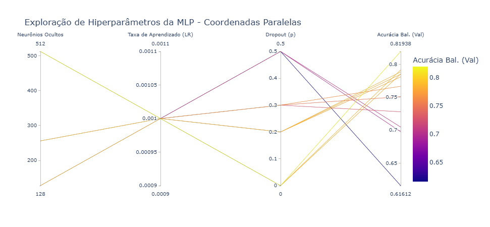
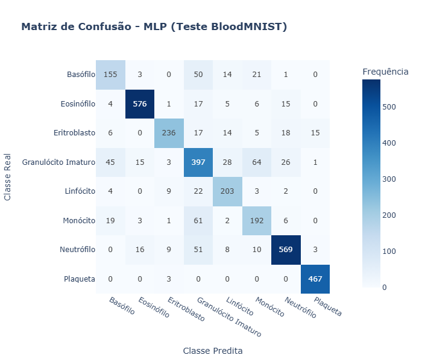
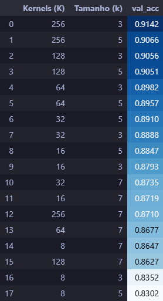
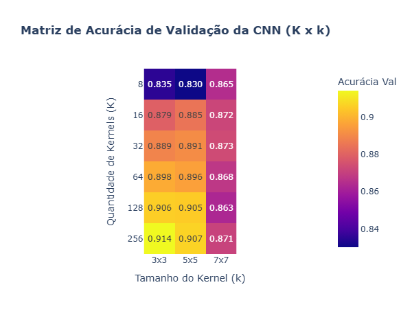
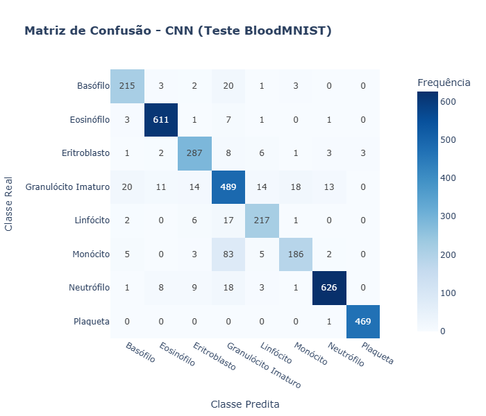
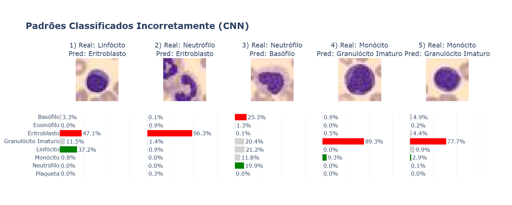
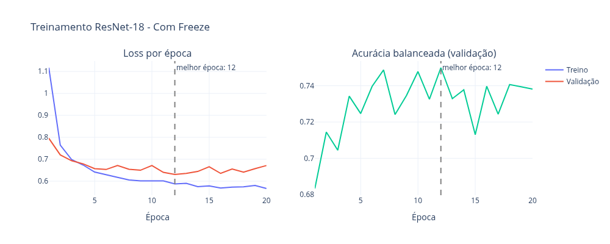
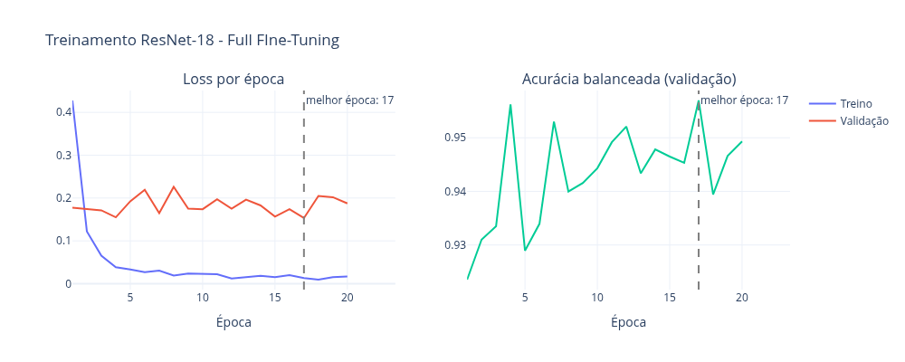
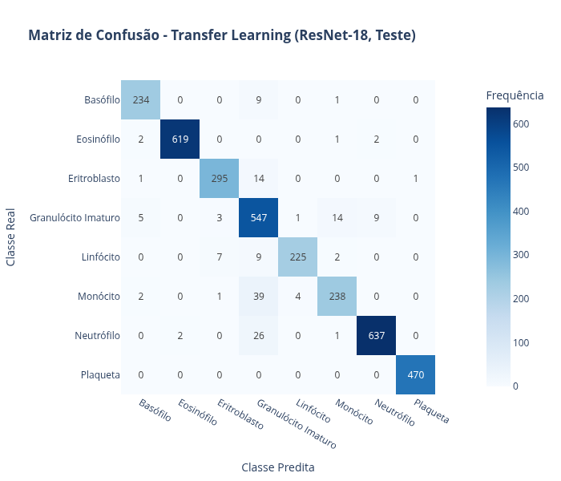

Prof. Levy Boccato
Aluno: Rafael Campideli Hoyos (175100).
Para a realização da atividade foram usadas ferramentas python,
destacando o uso de PyTorch [2]
e Scikit-Learn [3] (para treino
dos modelos e obtenção de métricas) e Plotly [4] (para plotagens de gráficos e tabelas). Os
códigos e demais arquivos utilizados/confeccionados neste trabalho foram
organizados em uma estrutura simplificada da Cookiecutter Data
Science [5] e estão disponíveis no
GitHub no repositório TochaFh/IA048-ML-Atividades
[1].
Foi projetada uma MLP com exatamente uma camada oculta para classificar as 8 classes do BloodMNIST (imagens 28×28×3, partições oficiais de treino/validação/teste: 11.959/1.712/3.421). Cada configuração do grid de hiperparâmetros foi treinada por 20 épocas com Adam e entropia cruzada, e comparada pela acurácia balanceada na validação, métrica escolhida porque as classes são desbalanceadas.
O projeto da MLP pode ser resumido em duas tabelas: decisões / hiper parâmetros fixados e explorados.
| Configuração | Escolha / Valor | Justificativa |
|---|---|---|
| Dimensão de Entrada | 2352 neurônios | Achatamento (Flatten) da imagem colorida de 28 × 28 × 3 pixels. |
| Pré-processamento | Escalonamento em [0.0, 1.0] | Divisão dos pixels por 255. Mantém as entradas em faixa limitada, o que estabiliza a otimização com a inicialização padrão do PyTorch. Não foi aplicada normalização por média/desvio. |
| Nº de Camadas Ocultas | Exatamente 1 camada | Exigência da atividade. |
| Ativação Intermediária | ReLU (max (0, x)) | Não linearidade simples e barata, com gradiente 1 para x > 0, o que mitiga o desvanecimento de gradiente em relação a sigmoide/tanh. |
| Camada de Saída | 8 neurônios (Logits brutos) | Corresponde às 8 classes de células sanguíneas, sem ativação no forward. |
| Função de Custo | Entropia Cruzada Multiclasse | Aplica o Softmax internamente com estabilidade numérica. |
| Otimizador | Adam | Algoritmo com taxas de aprendizado adaptativas e rápida convergência. |
| Regularização L2 | weight_decay = 10−4 | Valor comum em experimentos de treinamento de redes neurais, adotado aqui sem exploração adicional. |
| Taxa de Aprendizado (η) | 10−3 | Em uma exploração preliminar, 10−4 teve um desempenho pior em todos os casos testados, provavelmente por convergência lenta em 20 épocas. Para reduzir o tamanho da busca, então, optou-se por fixar 10−3. |
| Número de Épocas | 20 épocas | Compromisso entre custo computacional (12 configurações) e convergência com η = 10−3. A melhor época é escolhida pela acurácia balanceada de validação. |
| Tamanho do Lote (Batch Size) | 64 amostras | Lotes pequenos dão mais atualizações por época e o ruído do gradiente atua como regularização leve, o que favorece a convergência em apenas 20 épocas. |
| Hiperparâmetro | Valores Candidatos | Propósito da Exploração |
|---|---|---|
| Neurônios Ocultos (Noculta) | {128, 256, 512} | Avaliar o impacto da capacidade de representação e complexidade da rede. |
| Probabilidade de Dropout (p) | {0.0, 0.2, 0.3, 0.5} | Investigar o efeito da inativação aleatória de neurônios na generalização. |
Para melhor entender a MLP projetada veja o diagrama abaixo:
flowchart LR
A["Entrada:\n> imagem (28 x 28 x 3)"] --> B["Achatamento (flatten)\n> [2352]"]
B --> C["Camada Oculta: Linear + ReLU + Dropout(p)\n> [N_oculta]"]
C --> D["Camada de Saída: Linear\n> 8 Logits"]
D -- "Treino" --> E["Entropia Cruzada (Softmax Interno + Loss)"]
D -- "Teste / Inferência" --> F["Softmax Explícito\n> Argmax"]
F --> G["> Classe Predita (0 a 7)\n> Métricas (Acurácia, F1, Matriz)"]

A melhor configuração foi N_oculta = 512, dropout = 0 (acurácia
balanceada de validação 0,8194). Observa-se que:
Utilizando os pesos do melhor modelo treinado (maior acurácia na validação), os seguintes resultados foram obtidos para o teste:
Acurácia Balanceada (Teste): 0.7953
F1-Score Macro (Teste): 0.7952
No teste, o modelo atingiu acurácia balanceada de 0,7953 e F1 macro de 0,7952 (acurácia simples ≈ 0,817). A queda em relação à validação (0,8194) é esperada: esse valor foi o máximo sobre épocas e configurações, logo é levemente otimista.
O desempenho varia bastante entre classes:
Os erros se concentram em torno do granulócito imaturo: 50 basófilos (20%) e 61 monócitos (21%) foram classificados como ele, e ele próprio foi confundido com monócito (64), basófilo (45) e neutrófilo (26); 51 neutrófilos também foram rotulados como granulócito imaturo. Por isso sua precisão é de apenas 64,6%. Biologicamente, essas classes diferem principalmente na forma do núcleo e na textura fina dos grânulos, informação espacial que se perde na resolução 28×28 e, principalmente, no achatamento (flatten), que descarta a vizinhança entre pixels. Isso motiva o uso de CNNs, que exploram localidade e compartilhamento de pesos.
| Configuração | Escolha / Valor | Justificativa |
|---|---|---|
| Formato de Entrada | Tensor 3 × 28 × 28 | Preserva a vizinhança espacial e os 3 canais RGB; diferentemente da MLP, a imagem não é achatada na entrada. |
| Pré-processamento | Escalonamento em [0.0, 1.0] | Mesmo da MLP (divisão por 255 via ToTensor()), para
comparação direta. Sem normalização por média/desvio e sem aumento de
dados. |
| Nº de Camadas Convolucionais | Exatamente 1 camada | Exigência da atividade. |
| Ativação | ReLU (max (0, x)) | Mesma justificativa do Item A: não linearidade simples, com gradiente 1 para x > 0. |
| Padding | Same ($P = \frac{k-1}{2}$) | Mantém 28 × 28 após a convolução para qualquer k. Assim, a entrada da camada densa (K ⋅ 14 ⋅ 14) depende só de K, e a comparação entre tamanhos de kernel isola o efeito do campo receptivo. |
| Passo da Convolução | S = 1 | Cada kernel percorre todas as posições, sem perder resolução antes do pooling. |
| Pooling | Max-Pooling 2 × 2 (S = 2) | Reduz 28 × 28 → 14 × 14, o que diminui em 75% o número de ativações (e de pesos da camada de saída) e dá tolerância a pequenos deslocamentos. Janela pequena porque a imagem já tem baixa resolução. |
| Camada de Saída | Linear: K ⋅ 14 ⋅ 14 → 8 logits | Sem camada densa intermediária: a camada convolucional é a única responsável pela extração de atributos. Sem Softmax no forward. |
| Dropout | Não utilizado | No Item A o dropout não trouxe ganho (melhor resultado com p = 0); a regularização fica a cargo do L2. |
| Função de Custo | Entropia Cruzada Multiclasse | Igual ao Item A (Softmax interno, numericamente estável). |
| Otimizador e L2 | Adam, weight_decay = 10−4 | Mesmos do Item A. o valor de L2 é o usual e não foi ajustado. |
| Taxa de Aprendizado (η) | 10−3 | Mesma do Item A. Não foi revalidada para a CNN. |
| Tamanho do Lote | 64 amostras | Igual ao Item A, mantendo o mesmo número de atualizações por época. |
| Número de Épocas | 20 épocas | Mesmo orçamento do Item A, para comparação justa entre as 18 configurações. Os pesos da melhor época (acurácia balanceada de validação) são restaurados. |
| Hiperparâmetro | Valores Candidatos | Propósito da Exploração |
|---|---|---|
| Quantidade de Kernels (K) | {8, 16, 32, 64, 128, 256} | Número de detectores de atributos aprendidos em paralelo (profundidade dos feature maps), que também define o tamanho da camada de saída (K ⋅ 196 ⋅ 8 pesos). Progressão em potências de 2, de uma representação mínima a uma bastante redundante. |
| Tamanho do Kernel (k × k) | {3 × 3, 5 × 5, 7 × 7} | Escala do campo receptivo local: ≈ 10, 7%, 17, 9% e 25, 0% da largura da imagem. Kernels pequenos tendem a captar detalhes finos (bordas, texturas) e maiores, estruturas mais amplas, o que será verificado nos resultados. Só valores ímpares, para que o same padding seja simétrico. |
Total: 6 × 3 = 18 configurações.


A melhor configuração foi K = 256, k = 3 × 3 (acurácia balanceada de
validação 0,9142). Observa-se que:
Todas as 18 CNNs superaram a melhor MLP: a pior (K = 8, k = 5) obteve 0,8302. A melhor CNN tem ≈ 409 mil parâmetros, contra ≈ 1,21 milhão da melhor MLP. A vantagem vem do fato de a convolução levar em consideração a localidade, com compartilhamento de pesos, o que não ocorre na MLP.
Mais kernels ajudam, com retorno decrescente: Para k = 3, a acurácia sobe de 0,8352 (K = 8) para 0,8793 (K = 16) e depois ganha só ≈ 0,7 a 1 p.p. a cada duplicação. Para k = 5 o ganho satura entre K = 128 e 256 (0,9051 → 0,9066).
Kernels 3×3 e 5×5 têm desempenho muito próximo: (diferença < 1 p.p. para K ≤ 128), com leve vantagem do 3×3 em K = 256.
O kernel 7×7 foi quase sempre pior (para K ≥ 16): Não necessariamente melhora junto com o aumento de kernels, há um platô, aparentemente. Uma hipótese para isso é que filtros maiores (147 pesos por filtro, contra 27 do 3×3) favorecem overfitting ou suavizam detalhes finos em imagens de 28×28.
Limite do grid e caminhos para melhorar: O melhor resultado está na borda do grid (K = 256), então valores maiores de K provavelmente renderiam um pouco mais. Entretanto, provavelmente esse não é o caminho mais indicado para melhorar o desempenho do modelo. O ganho por duplicação já é pequeno, enquanto o custo cresce linearmente com K (a camada de saída passa de ≈ 100 mil parâmetros com K = 64 para ≈ 401 mil com K = 256). Alternativas que fogem da restrição de uma única camada convolucional, mas que tendem a ser mais eficientes, são empilhar mais camadas convolucionais (aumentando o campo receptivo efetivo com poucos parâmetros) e combinar kernels de tamanhos diferentes na mesma camada, no estilo Inception. Esta segunda opção é sugerida pelos próprios resultados: 3×3 e 5×5 têm desempenho parecido e o 7×7 só ajuda quando há poucos kernels, o que indica que escalas diferentes captam informação complementar.
A melhor configuração da busca (K = 256, k = 3 × 3) foi retreinada do zero utilizando seed = 13 para a inicialização aleatória. Este novo treino atingiu 0,9078 de acurácia balanceada na validação.
Acurácia Balanceada (Validação): 0.9078O conjunto de teste foi avaliado uma única vez com esse modelo.
A CNN obteve acurácia balanceada de 0,8892 e F1 macro de 0,8929 (acurácia simples ≈ 0,906). A queda de 1,9 p.p. em relação à validação é esperada, pois o modelo (época e configuração) foi escolhido pela própria validação. Vale notar que as métricas têm variabilidade de ≈ 1 a 2 p.p. entre execuções: uma execução independente da mesma configuração (com outro retreinamento) havia apresentado 0,9069 de acurácia balanceada no teste, evidenciando a variabilidade entre diferentes inicializações.
Acurácia Balanceada (Teste): 0.8892
F1-Score Macro (Teste): 0.8929
| Classe | Precisão | Recall | F1 |
|---|---|---|---|
| Basófilo | 0,870 | 0,881 | 0,876 |
| Eosinófilo | 0,962 | 0,979 | 0,971 |
| Eritroblasto | 0,891 | 0,923 | 0,907 |
| Granulócito Imaturo | 0,762 | 0,845 | 0,801 |
| Linfócito | 0,879 | 0,893 | 0,886 |
| Monócito | 0,886 | 0,655 | 0,753 |
| Neutrófilo | 0,969 | 0,940 | 0,954 |
| Plaqueta | 0,994 | 0,998 | 0,996 |
As classes mais fáceis são plaqueta (recall 99,8%), eosinófilo (97,9%) e neutrófilo (94,0%). O ponto mais fraco é o monócito, com recall de apenas 65,5%: 83 das 284 amostras (29%) foram classificadas como granulócito imaturo, enquanto o erro inverso é bem menor (18 granulócitos imaturos classificados como monócito). Ou seja, a rede tem viés de “atrair” para o granulócito imaturo, que tem a menor precisão (76,2%). Os erros desse último são espalhados: basófilo (20), monócito (18), eritroblasto (14), linfócito (14) e neutrófilo (13), e basófilos, linfócitos e neutrófilos também foram confundidos com ele (20, 17 e 18). Ao todo, ≈ 76% dos 321 erros envolvem o granulócito imaturo, como classe real ou predita.

Os erros mostram comportamentos distintos da rede:
Visualmente, a amostra 2 mostra uma célula fora do centro, com lobos do núcleo cortados nas bordas da imagem, e a amostra 3 tem núcleo em formato de incomum, sem a segmentação típica de um neutrófilo maduro. Nas amostras 4 e 5 o núcleo é grande, arredondado e sem o típico “gap” visível, o que pode explicar a confusão com o granulócito imaturo.
Em resumo, os erros restantes se concentram em classes morfologicamente próximas, em que a diferença está em detalhes finos do núcleo e da cromatina, que a resolução de 28×28 preserva mal, além de amostras mal centradas ou ambíguas. Melhorar o desempenho exigiria modelos mais expressivos (mais camadas, múltiplas escalas) ou maior resolução.
Foi escolhida a arquitetura consagrada ResNet-18 [7] pré-treinada na base ImageNet (1,28 milhão de imagens cotidianas de 1.000 categorias).
| Configuração | Escolha / Valor | Justificativa Metodológica |
|---|---|---|
| Arquitetura Base | ResNet-18 (ImageNet Weights) | Estrutura profunda de 18 camadas com conexões residuais (skip connections), altamente eficiente para visão computacional. |
| Redimensionamento | 28 × 28 → 64 × 64 pixels | Os filtros convolucionais iniciais da ResNet-18 (7 × 7 com stride 2) foram projetados para entradas padrão de 224 × 224. O redimensionamento bilinear para 64 × 64 deve ser suficiente para evitar uma perda excessiva de resolução espacial nas primeiras camadas. |
| Normalização | Média/Desvio da ImageNet | Padronização dos canais RGB com μ = [0.485, 0.456, 0.406] e σ = [0.229, 0.224, 0.225], mantendo os tensores na faixa esperada pelos pesos pré-treinados. |
| Cabeça de Classificação | nn.Linear(512, 8) |
Substituição da camada linear original (1000 saídas) por uma nova camada densa adaptada às 8 classes do BloodMNIST. |
| Otimizador & Regularização | Adam, weight_decay = 10−4 |
Manutenção do mesmo otimizador adaptativo com regularização L2 utilizado nos Itens A e B. |
| Número de Épocas | 20 épocas | Orçamento de treinamento mantido idêntico ao dos itens anteriores. |
Investigaram-se duas estratégias fundamentais de Transfer Learning no conjunto de validação:
freeze_backbone=True):
Congelamento de todas as camadas convolucionais pré-treinadas da
ResNet-18, treinando exclusivamente a nova camada final de
classificação.freeze_backbone=False): Atualização de todos os
pesos da rede partindo dos valores pré-treinados da ImageNet. Para esta
abordagem, a taxa de aprendizado foi reduzida para η = 10−4 (contra η = 10−3 do modo com
freeze). Essa escolha é crítica: uma taxa menor evita a destruição
(catastrophic forgetting) dos extratores de atributos
pré-treinados nas camadas iniciais, permitindo um ajuste fino e delicado
para o domínio de imagens microscópicas.| Estratégia | Taxa de Aprendizado (η) | Parâmetros Treináveis | Acurácia Balanceada | Tempo de Treino |
|---|---|---|---|---|
| Com Freeze | 10−3 | 4.104 | 0,7499 | 39,16 s |
| Full Fine-Tuning | 10−4 | 11.180.616 | 0,9570 | 188,36 s |
O modo Sem Freeze foi amplamente superior (ganho de 20,7 p.p. na acurácia balanceada de validação). Como as imagens de células sanguíneas periféricas possuem morfologia muito distinta dos objetos cotidianos da ImageNet, permitir a adaptação de todo o backbone convolucional provou-se essencial.


Ao analisar o treinamento da ResNet-18 sem freeze (Full Fine Tuning) ao
longo das 20 épocas, observou-se:
O modelo da ResNet-18 treinado no modo Sem Freeze (pesos da Época 17) foi avaliado uma única vez no conjunto de teste independente.
Acurácia Balanceada (Teste): 0.9456
F1-Score Macro (Teste): 0.9505
| Classe | Precisão | Recall | F1-Score | Amostras (Real) |
|---|---|---|---|---|
| Basófilo | 0,9590 | 0,9590 | 0,9590 | 244 |
| Eosinófilo | 0,9968 | 0,9920 | 0,9944 | 624 |
| Eritroblasto | 0,9641 | 0,9486 | 0,9562 | 311 |
| Granulócito Imaturo | 0,8494 | 0,9447 | 0,8945 | 579 |
| Linfócito | 0,9783 | 0,9259 | 0,9514 | 243 |
| Monócito | 0,9261 | 0,8380 | 0,8799 | 284 |
| Neutrófilo | 0,9830 | 0,9565 | 0,9696 | 666 |
| Plaqueta | 0,9979 | 1,0000 | 0,9989 | 470 |
Principais observações sobre o teste:
A tabela a seguir consolida os resultados dos três modelos avaliados no projeto:
| Modelo | Acurácia Balanceada (Teste) | F1-Score Macro (Teste) | Parâmetros Treináveis | Tempo de Treinamento (GPU) |
|---|---|---|---|---|
| MLP (Item A - Noculta = 512) | 0,7953 | 0,7952 | 1.210 k | ≈ 20 s |
| CNN Artesanal (Item B/C - K=256, k=3) | 0,8892 | 0,8929 | 409 k | ≈ 70 s |
| ResNet-18 Transfer Learning (Full FIne-Tuning) | 0,9456 | 0,9505 | 11.180 k | ≈ 180 s |
A CNN Artesanal, mesmo possuindo cerca de 3 vezes menos parâmetros que a MLP (409 k vs. 1.210 k), superou a MLP em +9,39 p.p. na acurácia balanceada de teste. O flatten prematuro da imagem na MLP destrói a topologia 2D e força a rede a aprender relações espaciais do zero. A convolução, ao contrário, aplica viés indutivo de localidade e compartilhamento de pesos, garantindo maior eficiência de parâmetros.
O salto de desempenho da CNN Artesanal para a ResNet-18 (0, 8892 → 0, 9456, ganho de +5, 64 p.p.) demonstra o valor de arquiteturas profundas com conexões residuais e inicialização pré-treinada. Uma única camada convolucional atinge um limite de representação física (apenas atributos de baixo nível), enquanto a ResNet-18 constrói representações abstratas complexas.
Apesar de ser mais custosa temporariamente, uma execução de ≈ 3 minutos em GPU é perfeitamente viável em ambientes práticos e acadêmicos. O ganho de precisão diagnóstica em um contexto médico justificaria plenamente o custo computacional superior.